Análisis exploratorio de datos (EDA)#
# Importamos librerias a utilizar
import pandas as pd
import numpy as np
from matplotlib import pyplot as plt
import seaborn as sns
from statsmodels.tsa.seasonal import seasonal_decompose
from statsmodels.graphics.tsaplots import plot_acf
from statsmodels.graphics.tsaplots import plot_pacf
from statsmodels.tsa.stattools import adfuller
from statsmodels.tsa.stattools import kpss
from scipy import stats
from scipy.fftpack import fft, fftfreq
from scipy.stats import zscore
import pingouin as pg
# importamos datos
filename = 'C:/Users/luis_/Desktop\MaestriaEstadisticaAplicada/_7SeriesDeTiempo/Proyectos_python/datos_proyecto/datos_velocidad_viento.xlsx'
data = pd.read_excel(filename)
# Haciendo que el index sean las mismas fechas
data.index = data['FechaObservacion']
1. Introducción y contexto#
Los datos utilizados en esta investigación se tomaron de la plataforma de datos abiertos de Colombia, los datos fueron suministrados a la plataforma por el Instituto de Hidrología, Meteorología y Estudios Ambientales (IDEAM). El conjunto de datos contiene la velocidad del viento (m/s), y la fecha y hora de realización de la medición. Los registros se realizaron cada 10 minutos desde junio 25 del 2012 hasta noviembre 22 del 2019, y fueron tomados en la ciudad de Bogotá, Colombia, para un total de 384 435 observaciones.
Enlace de los datos: Velocidad Viento
Objetivo: El objetivo de este análisis es identificar patrones relevantes de la seria, tendencias, estacionalidad, valores atípicos, y otras características de la serie con el fin desarrollar un entendimiento de los datos antes de aplicar nuestro modelo predictivo,
2. Análisis preliminar#
2.1. Inspección general#
data.info()
<class 'pandas.core.frame.DataFrame'>
DatetimeIndex: 384435 entries, 2012-06-25 11:00:00 to 2019-11-22 19:20:00
Data columns (total 2 columns):
# Column Non-Null Count Dtype
--- ------ -------------- -----
0 FechaObservacion 384435 non-null datetime64[ns]
1 ValorObservado 384435 non-null float64
dtypes: datetime64[ns](1), float64(1)
memory usage: 8.8 MB
2.2. Estádisticas descriptivas#
# Estadística descriptiva
df_resumen = data['ValorObservado'].describe()
df_resumen['Skewness'] = data['ValorObservado'].skew()
df_resumen['Kurtosis'] = data['ValorObservado'].kurtosis()
print(df_resumen)
count 384435.000000
mean 1.923176
std 2.827910
min 0.000000
25% 1.000000
50% 1.500000
75% 2.200000
max 80.000000
Skewness 16.871123
Kurtosis 349.827977
Name: ValorObservado, dtype: float64
3. Visualización de la serie#
3.1. Visualización temporal#
# Creando tabla de fecha díaria y promedio diario de velocidad del viento
df_daily_avg = data.groupby(data['FechaObservacion'].dt.date)['ValorObservado'].mean().reset_index()
df_daily_avg.head()
| FechaObservacion | ValorObservado | |
|---|---|---|
| 0 | 2012-06-25 | 1.796154 |
| 1 | 2012-06-26 | 1.937500 |
| 2 | 2012-06-27 | 1.408333 |
| 3 | 2012-06-28 | 1.486806 |
| 4 | 2012-06-29 | 1.602778 |
# Creo una figura con 1 fila y 2 columnas
fig, axes = plt.subplots(1, 2, figsize=(10, 4))
# Gráfica de línea 1, serie sin agrupar
axes[0].plot(data['FechaObservacion'], data['ValorObservado'])
axes[0].set_xlabel("Fecha (10 minutos)")
axes[0].set_ylabel("velocidad del viento")
# Gráfica de línea 2, serie agrupada por día
axes[1].plot(df_daily_avg['FechaObservacion'], df_daily_avg['ValorObservado'])
axes[1].set_xlabel("Fecha (día)")
axes[1].set_ylabel("velocidad del viento promedio por día")
Text(0, 0.5, 'velocidad del viento promedio por día')
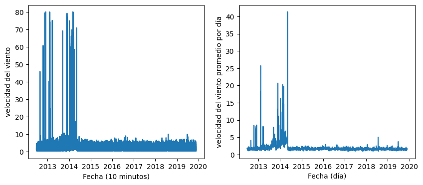
# Histograma de velocidad del viento
plt.hist(data['ValorObservado'], bins=100, density=True)
(array([1.15894104e-01, 5.36212234e-01, 3.52865244e-01, 1.11654116e-01,
6.28129593e-02, 3.60366512e-02, 1.66705685e-02, 7.06231222e-03,
3.98962113e-03, 1.68754146e-03, 7.38096167e-04, 3.67422321e-04,
1.56073198e-04, 6.82820243e-05, 3.90182996e-05, 7.80365992e-05,
3.90182996e-05, 4.87728745e-05, 2.92637247e-05, 3.25152497e-05,
2.27606748e-05, 4.22698245e-05, 2.92637247e-05, 2.60121997e-05,
2.92637247e-05, 3.25152497e-05, 5.20243994e-05, 1.30060999e-05,
2.92637247e-05, 6.50304993e-06, 2.60121997e-05, 3.57667746e-05,
2.60121997e-05, 3.90182996e-05, 9.42942240e-05, 5.20243994e-05,
4.55213495e-05, 6.17789743e-05, 4.22698245e-05, 3.57667746e-05,
3.25152497e-05, 2.92637247e-05, 3.90182996e-05, 9.75457490e-06,
6.50304993e-05, 4.22698245e-05, 4.55213495e-05, 3.90182996e-05,
3.57667746e-05, 4.22698245e-05, 7.80365992e-05, 7.47850742e-05,
7.80365992e-05, 6.82820243e-05, 4.87728745e-05, 6.82820243e-05,
5.85274494e-05, 4.87728745e-05, 3.57667746e-05, 4.55213495e-05,
5.85274494e-05, 3.57667746e-05, 7.80365992e-05, 4.55213495e-05,
7.15335492e-05, 4.55213495e-05, 5.85274494e-05, 8.12881241e-05,
6.50304993e-05, 3.57667746e-05, 4.22698245e-05, 3.90182996e-05,
4.87728745e-05, 4.55213495e-05, 3.57667746e-05, 2.92637247e-05,
3.25152497e-05, 7.47850742e-05, 5.20243994e-05, 6.50304993e-05,
4.22698245e-05, 5.20243994e-05, 6.17789743e-05, 7.47850742e-05,
8.45396491e-05, 7.80365992e-05, 5.85274494e-05, 4.87728745e-05,
4.22698245e-05, 1.30060999e-05, 1.95091498e-05, 1.95091498e-05,
1.62576248e-05, 2.92637247e-05, 9.75457490e-06, 1.95091498e-05,
1.30060999e-05, 6.50304993e-06, 1.95091498e-05, 4.22698245e-05]),
array([ 0. , 0.8, 1.6, 2.4, 3.2, 4. , 4.8, 5.6, 6.4, 7.2, 8. ,
8.8, 9.6, 10.4, 11.2, 12. , 12.8, 13.6, 14.4, 15.2, 16. , 16.8,
17.6, 18.4, 19.2, 20. , 20.8, 21.6, 22.4, 23.2, 24. , 24.8, 25.6,
26.4, 27.2, 28. , 28.8, 29.6, 30.4, 31.2, 32. , 32.8, 33.6, 34.4,
35.2, 36. , 36.8, 37.6, 38.4, 39.2, 40. , 40.8, 41.6, 42.4, 43.2,
44. , 44.8, 45.6, 46.4, 47.2, 48. , 48.8, 49.6, 50.4, 51.2, 52. ,
52.8, 53.6, 54.4, 55.2, 56. , 56.8, 57.6, 58.4, 59.2, 60. , 60.8,
61.6, 62.4, 63.2, 64. , 64.8, 65.6, 66.4, 67.2, 68. , 68.8, 69.6,
70.4, 71.2, 72. , 72.8, 73.6, 74.4, 75.2, 76. , 76.8, 77.6, 78.4,
79.2, 80. ]),
<BarContainer object of 100 artists>)
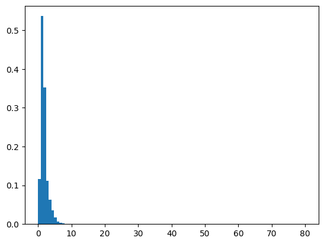
3.2. Análisis de componentes#
# Creando columna de inicio de mes
data['Start_Month'] = data['FechaObservacion'].dt.to_period('M').dt.to_timestamp()
# Creando tabla de mes y promedio diario de velocidad del viento
monthly_avg = data.groupby('Start_Month')['ValorObservado'].mean().reset_index()
# Haciendo que el index sean las mismas fechas
monthly_avg.index = monthly_avg['Start_Month']
monthly_avg.head()
| Start_Month | ValorObservado | |
|---|---|---|
| Start_Month | ||
| 2012-06-01 | 2012-06-01 | 1.631328 |
| 2012-07-01 | 2012-07-01 | 1.552800 |
| 2012-08-01 | 2012-08-01 | 1.665927 |
| 2012-09-01 | 2012-09-01 | 1.595463 |
| 2012-10-01 | 2012-10-01 | 2.003546 |
# Descomposición de la serie, descomposición aditiva por mes
decomposition = seasonal_decompose(monthly_avg['ValorObservado'], model='additive', period=6)
plt.figure()
plt.subplot(411)
plt.plot(monthly_avg['ValorObservado'], label='Original')
plt.legend(loc='upper left')
plt.subplot(412)
plt.plot(decomposition.trend, label='Trend')
plt.legend(loc='upper left')
plt.subplot(413)
plt.plot(decomposition.seasonal, label='Seasonal')
plt.legend(loc='upper left')
plt.subplot(414)
plt.plot(decomposition.resid, label='Irregular (Residual)')
plt.legend(loc='upper left')
plt.tight_layout()
plt.show()
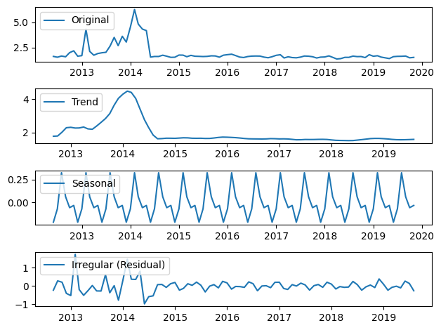
3.3. Detección de anomalías#
# Calcular Z-Score
data['z_score'] = zscore(data['ValorObservado'])
# Detectar outliers
outliers_z = data[data['z_score'].abs() > 3]
print("Outliers detectados (Z-Score):")
print(outliers_z)
# Graficar la serie con los outliers
plt.figure(figsize=(10, 6))
plt.scatter(data.index, data['ValorObservado'], label='Datos', color='blue')
plt.scatter(outliers_z.index, outliers_z['ValorObservado'], color='red', label='Outliers')
plt.title("Detección de Outliers con Z-Score")
plt.xlabel("Fecha")
plt.ylabel("Valor")
plt.legend()
plt.grid(True)
plt.show()
Outliers detectados (Z-Score):
FechaObservacion ValorObservado Start_Month z_score
FechaObservacion
2012-08-26 17:10:00 2012-08-26 17:10:00 15.1 2012-08-01 4.659569
2012-08-26 17:30:00 2012-08-26 17:30:00 11.2 2012-08-01 3.280457
2012-08-26 17:40:00 2012-08-26 17:40:00 45.4 2012-08-01 15.374210
2012-08-26 17:50:00 2012-08-26 17:50:00 38.5 2012-08-01 12.934242
2012-08-26 18:00:00 2012-08-26 18:00:00 42.6 2012-08-01 14.384078
... ... ... ... ...
2014-05-09 10:50:00 2014-05-09 10:50:00 48.0 2014-05-01 16.293618
2014-05-09 11:00:00 2014-05-09 11:00:00 40.3 2014-05-01 13.570755
2014-05-09 11:10:00 2014-05-09 11:10:00 45.3 2014-05-01 15.338848
2014-05-09 15:10:00 2014-05-09 15:10:00 48.1 2014-05-01 16.328980
2014-05-09 15:20:00 2014-05-09 15:20:00 45.3 2014-05-01 15.338848
[1184 rows x 4 columns]
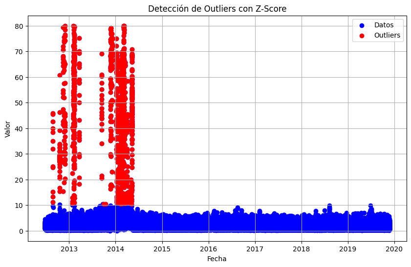
4. Estacionalidad y periodicidad#
4.1. Análisis de patrones recurrentes#
# Gráfica de autocorrelación y autocorrelación parcial de la serie
# Creo una figura con 1 fila y 2 columnas
fig, axes = plt.subplots(1, 2, figsize=(10, 4))
# Gráfica de autocorrelación
plot_acf(df_daily_avg['ValorObservado'], lags=31, ax=axes[0])
axes[0].set_xlabel("Lags")
axes[0].set_ylabel("Autocorrelación por día")
# Gráfica de autocorrelación parcial
plot_pacf(df_daily_avg['ValorObservado'], lags=31, ax=axes[1])
axes[1].set_xlabel("Lags")
axes[1].set_ylabel("Autocorrelación parcial por día")
plt.tight_layout()
plt.show()
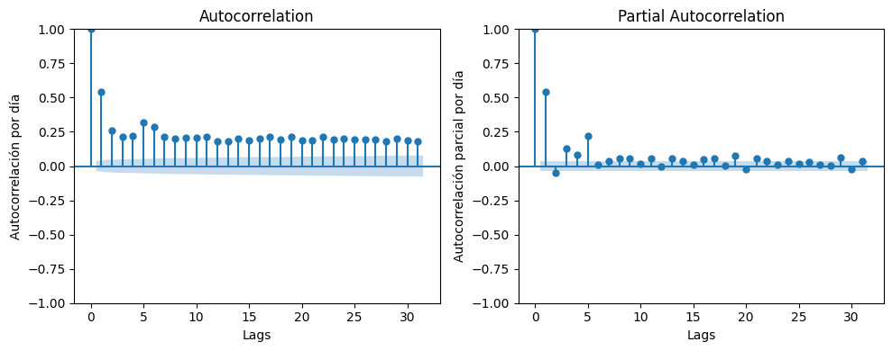
# Creando columna de año
data['Year'] = data['FechaObservacion'].dt.year
# Creo una figura con 1 fila y 2 columnas
fig, axes = plt.subplots(1, 2, figsize=(10, 4))
# Gráfica de caja y bigote
sns.boxplot(x=data['Year'], y=data['ValorObservado'], ax=axes[0])
axes[0].set_xlabel("Año")
axes[0].set_ylabel("velocidad del viento")
# Gráfica de caja y bigote sin valores extremos
sns.boxplot(x=data['Year'], y=data['ValorObservado'], ax=axes[1], showfliers=False)
axes[1].set_xlabel("Año")
axes[1].set_ylabel("velocidad del viento")
Text(0, 0.5, 'velocidad del viento')
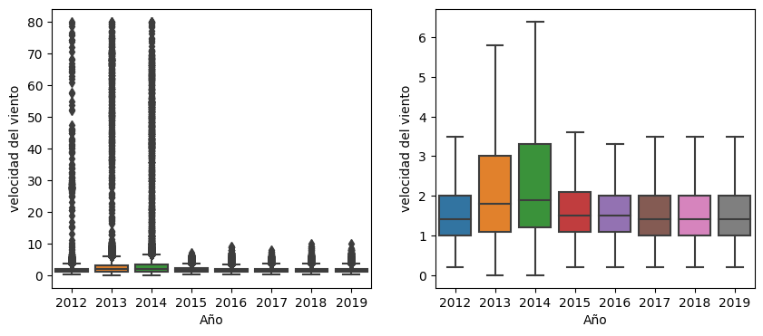
# Obtengo los valores únicos de los años
years = data['Year'].unique()
# Agrupo los datos por año
groups = [data[data['Year'] == year]['ValorObservado'] for year in years]
# Aplico prueba de Levene para la igualdad de varianzas
stats.levene(*groups)
LeveneResult(statistic=1444.361364314255, pvalue=0.0)
# Aplico prueba de ANOVA de Welch, para ver si hay diferencias en las medias por año
pg.welch_anova(dv='ValorObservado', between='Year', data=data)
| Source | ddof1 | ddof2 | F | p-unc | np2 | |
|---|---|---|---|---|---|---|
| 0 | Year | 7 | 151658.302804 | 810.731335 | 0.0 | 0.031759 |
4.2. Transformación del dominio del tiempo#
# Creando columna de inicio de semana
data['Start_Week'] = data['FechaObservacion'].dt.to_period('W').dt.to_timestamp()
# Creando tabla de semana y promedio semanal de velocidad del viento
weekly_avg = data.groupby('Start_Week')['ValorObservado'].mean().reset_index()
weekly_avg.head()
| Start_Week | ValorObservado | |
|---|---|---|
| 0 | 2012-06-25 | 1.595541 |
| 1 | 2012-07-02 | 1.481548 |
| 2 | 2012-07-09 | 1.438393 |
| 3 | 2012-07-16 | 1.819940 |
| 4 | 2012-07-23 | 1.548611 |
# Creo una figura con 1 fila y 2 columnas
fig, axes = plt.subplots(1, 2, figsize=(10, 4))
# Gráfica de velocidad del viento por semana
axes[0].plot(weekly_avg['Start_Week'], weekly_avg['ValorObservado'])
axes[0].set_xlabel("Fecha (Semana)")
axes[0].set_ylabel("velocidad del viento por semana")
# Gráfica de velocidad del viento por mes
axes[1].plot(monthly_avg['Start_Month'], monthly_avg['ValorObservado'])
axes[1].set_xlabel("Fecha (Mes)")
axes[1].set_ylabel("velocidad del viento por mes")
Text(0, 0.5, 'velocidad del viento por mes')
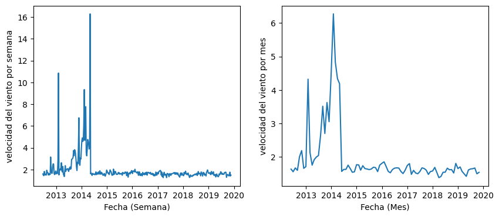
5. Análisis de tendencia#
# Se define función de suavisazión
def firstsmooth(y, lambda_, start=None):
ytilde = y.copy()
if start is None:
start = y[0]
ytilde[0] = lambda_ * y[0] + (1 - lambda_) * start
for i in range(1, len(y)):
ytilde[i] = lambda_ * y[i] + (1 - lambda_) * ytilde[i - 1]
return ytilde
# Se crea serie de los datos
data_ts = pd.Series(data=data['ValorObservado'].values, index = data['FechaObservacion'])
# Se aplica la función a la serie
data_smooth = firstsmooth(y=data_ts, lambda_=0.1)
C:\Users\luis_\AppData\Local\Temp\ipykernel_20988\4249688561.py:5: FutureWarning: Series.__getitem__ treating keys as positions is deprecated. In a future version, integer keys will always be treated as labels (consistent with DataFrame behavior). To access a value by position, use `ser.iloc[pos]`
start = y[0]
C:\Users\luis_\AppData\Local\Temp\ipykernel_20988\4249688561.py:6: FutureWarning: Series.__getitem__ treating keys as positions is deprecated. In a future version, integer keys will always be treated as labels (consistent with DataFrame behavior). To access a value by position, use `ser.iloc[pos]`
ytilde[0] = lambda_ * y[0] + (1 - lambda_) * start
C:\Users\luis_\AppData\Local\Temp\ipykernel_20988\4249688561.py:6: FutureWarning: Series.__setitem__ treating keys as positions is deprecated. In a future version, integer keys will always be treated as labels (consistent with DataFrame behavior). To set a value by position, use `ser.iloc[pos] = value`
ytilde[0] = lambda_ * y[0] + (1 - lambda_) * start
C:\Users\luis_\AppData\Local\Temp\ipykernel_20988\4249688561.py:8: FutureWarning: Series.__getitem__ treating keys as positions is deprecated. In a future version, integer keys will always be treated as labels (consistent with DataFrame behavior). To access a value by position, use `ser.iloc[pos]`
ytilde[i] = lambda_ * y[i] + (1 - lambda_) * ytilde[i - 1]
C:\Users\luis_\AppData\Local\Temp\ipykernel_20988\4249688561.py:8: FutureWarning: Series.__setitem__ treating keys as positions is deprecated. In a future version, integer keys will always be treated as labels (consistent with DataFrame behavior). To set a value by position, use `ser.iloc[pos] = value`
ytilde[i] = lambda_ * y[i] + (1 - lambda_) * ytilde[i - 1]
# Gráfica con datos suavizados
plt.plot(data_ts, marker='o', linestyle='', markersize=3, label='Velocidad del Viento')
plt.plot(data_smooth, label='SES $\lambda=0.1$')
plt.xlabel('Fecha')
plt.ylabel('Velocidad del viento')
plt.legend()
plt.show()
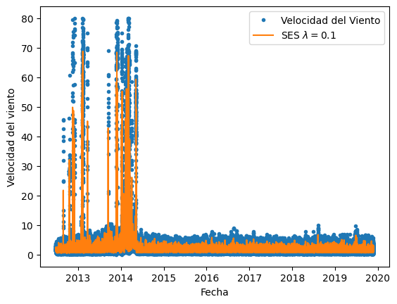
# Creo columna de media movil de 5 días
data['5-Day Moving Avg'] = data['ValorObservado'].rolling(720).mean()
# Gráfica de medias moviles
fig = plt.figure(figsize=(5, 4))
ax = fig.add_subplot(2,1,1)
data['ValorObservado'].plot(ax=ax, color='b')
ax.set_title('Velocida del viento')
ax = fig.add_subplot(2,1,2)
data['5-Day Moving Avg'].plot(ax=ax, color='r')
ax.set_title('Media Móvil de 5 días')
plt.tight_layout(pad=0.4, w_pad=0.5, h_pad=2.0)
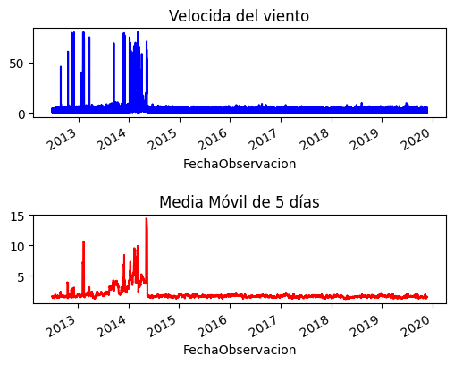
6. Estabilidad de la serie#
6.1. Análisis de estacionariedad#
# Se realiza prueba de Kolmogorov-Smirnov para la normalidad
print('Kolmogorov-Smirnov:')
stat, p = stats.kstest(data['ValorObservado'], stats.norm.cdf)
print('Statistics=%.6f, p=%e' % (stat, p))
alpha = 0.05
if p > alpha:
print('Sample looks Normal (fail to reject H0)')
else:
print('Sample does not look Normal (reject H0)')
Kolmogorov-Smirnov:
Statistics=0.704191, p=0.000000e+00
Sample does not look Normal (reject H0)
# Prueba de Jarque-Bera para la normalidad
stats.jarque_bera(data['ValorObservado'])
SignificanceResult(statistic=1978477899.5949402, pvalue=0.0)
# Prueba de Dickey-Fuller aumentado (ADF)
adf_result = adfuller(data['ValorObservado'], autolag='AIC')
---------------------------------------------------------------------------
KeyboardInterrupt Traceback (most recent call last)
Cell In[31], line 2
1 # Prueba de Dickey-Fuller aumentado (ADF)
----> 2 adf_result = adfuller(data['ValorObservado'], autolag='AIC')
File ~\miniconda3\envs\ml_venv\lib\site-packages\statsmodels\tsa\stattools.py:326, in adfuller(x, maxlag, regression, autolag, store, regresults)
320 # 1 for level
321 # search for lag length with smallest information criteria
322 # Note: use the same number of observations to have comparable IC
323 # aic and bic: smaller is better
325 if not regresults:
--> 326 icbest, bestlag = _autolag(
327 OLS, xdshort, fullRHS, startlag, maxlag, autolag
328 )
329 else:
330 icbest, bestlag, alres = _autolag(
331 OLS,
332 xdshort,
(...)
337 regresults=regresults,
338 )
File ~\miniconda3\envs\ml_venv\lib\site-packages\statsmodels\tsa\stattools.py:133, in _autolag(mod, endog, exog, startlag, maxlag, method, modargs, fitargs, regresults)
131 for lag in range(startlag, startlag + maxlag + 1):
132 mod_instance = mod(endog, exog[:, :lag], *modargs)
--> 133 results[lag] = mod_instance.fit()
135 if method == "aic":
136 icbest, bestlag = min((v.aic, k) for k, v in results.items())
File ~\miniconda3\envs\ml_venv\lib\site-packages\statsmodels\regression\linear_model.py:333, in RegressionModel.fit(self, method, cov_type, cov_kwds, use_t, **kwargs)
328 if method == "pinv":
329 if not (hasattr(self, 'pinv_wexog') and
330 hasattr(self, 'normalized_cov_params') and
331 hasattr(self, 'rank')):
--> 333 self.pinv_wexog, singular_values = pinv_extended(self.wexog)
334 self.normalized_cov_params = np.dot(
335 self.pinv_wexog, np.transpose(self.pinv_wexog))
337 # Cache these singular values for use later.
File ~\miniconda3\envs\ml_venv\lib\site-packages\statsmodels\tools\tools.py:264, in pinv_extended(x, rcond)
262 x = np.asarray(x)
263 x = x.conjugate()
--> 264 u, s, vt = np.linalg.svd(x, False)
265 s_orig = np.copy(s)
266 m = u.shape[0]
File ~\miniconda3\envs\ml_venv\lib\site-packages\numpy\linalg\linalg.py:1681, in svd(a, full_matrices, compute_uv, hermitian)
1678 gufunc = _umath_linalg.svd_n_s
1680 signature = 'D->DdD' if isComplexType(t) else 'd->ddd'
-> 1681 u, s, vh = gufunc(a, signature=signature, extobj=extobj)
1682 u = u.astype(result_t, copy=False)
1683 s = s.astype(_realType(result_t), copy=False)
KeyboardInterrupt:
print("ADF Statistic:", adf_result[0])
print("p-value:", adf_result[1])
print("Critical Values:", adf_result[4])
ADF Statistic: -42.72456565149802
p-value: 0.0
Critical Values: {'1%': -3.4303670145201903, '5%': -2.8615475202126683, '10%': -2.566774002735368}
# Prueba de KPSS
kpss_result = kpss(data['ValorObservado'], regression='c', nlags="auto")
# Print the results
print("KPSS Statistic:", kpss_result[0])
print("p-value:", kpss_result[1])
print("Critical Values:", kpss_result[3])
KPSS Statistic: 10.925309544625428
p-value: 0.01
Critical Values: {'10%': 0.347, '5%': 0.463, '2.5%': 0.574, '1%': 0.739}
C:\Users\luis_\AppData\Local\Temp\ipykernel_12300\3818873849.py:2: InterpolationWarning: The test statistic is outside of the range of p-values available in the
look-up table. The actual p-value is smaller than the p-value returned.
kpss_result = kpss(data['ValorObservado'], regression='c', nlags="auto")
6.2. Transformaciones de datos#
# Aplicando diferenciación
first_order_diff = data['ValorObservado'].diff(1)
# Gráfica de la seria con datos diferenciados
plt.plot( first_order_diff.index, first_order_diff.values)
[<matplotlib.lines.Line2D at 0x23b8b06e580>]
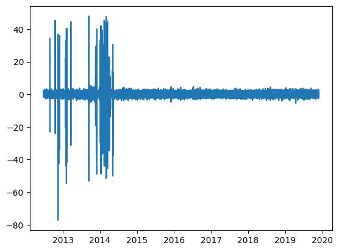
# Realizando prueba de ADF con los datos diferenciados
adf_result = adfuller(first_order_diff.iloc[1:], autolag='AIC')
print("ADF Statistic:", adf_result[0])
print("p-value:", adf_result[1])
print("Critical Values:", adf_result[4])
ADF Statistic: -97.23714881224768
p-value: 0.0
Critical Values: {'1%': -3.4303670145644602, '5%': -2.861547520232235, '10%': -2.566774002745783}
# Realizando prueba de KPSS con los datos diferenciados
kpss_result = kpss(first_order_diff.iloc[1:], regression='c', nlags="auto")
# Print the results
print("KPSS Statistic:", kpss_result[0])
print("p-value:", kpss_result[1])
print("Critical Values:", kpss_result[3])
KPSS Statistic: 0.0004464937388035633
p-value: 0.1
Critical Values: {'10%': 0.347, '5%': 0.463, '2.5%': 0.574, '1%': 0.739}
C:\Users\luis_\AppData\Local\Temp\ipykernel_12300\403408010.py:2: InterpolationWarning: The test statistic is outside of the range of p-values available in the
look-up table. The actual p-value is greater than the p-value returned.
kpss_result = kpss(first_order_diff.iloc[1:], regression='c', nlags="auto")
7. Análisis multivariado (no aplica)#
En nuestro caso este paso no aplica ya que nosotros solo tenemos una variable a analizar, la velocidad del viento.
8. Identificación de ciclos y frecuencia#
# Aplicamos la Transformada de Fourier
fft_values = fft(data['ValorObservado'].values) # Coeficientes de Fourier
frequencies = fftfreq(384435) # Frecuencias normalizadas
# Solo tomamos la mitad positiva (frecuencia positiva)
pos_mask = frequencies > 0
frequencies = frequencies[pos_mask]
fft_values = np.abs(fft_values[pos_mask]) # Magnitud de la FFT
# Graficamos el espectro de frecuencia
plt.figure(figsize=(8, 4))
plt.plot(1 / frequencies, fft_values, marker="o") # Convertimos frecuencia en período (1/f)
plt.xlabel("Período (10 min)")
plt.ylabel("Amplitud (Intensidad)")
plt.xlim(0, 384435) # Limitamos el eje x a ciclos relevantes
plt.grid()
plt.show()
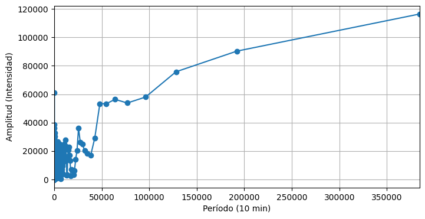